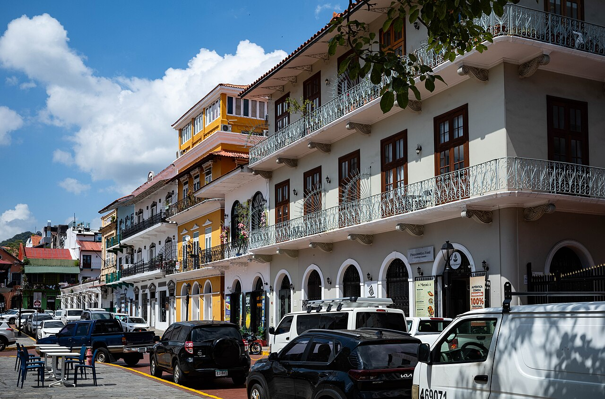
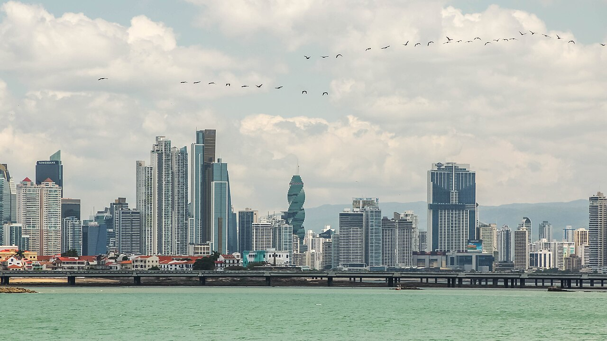
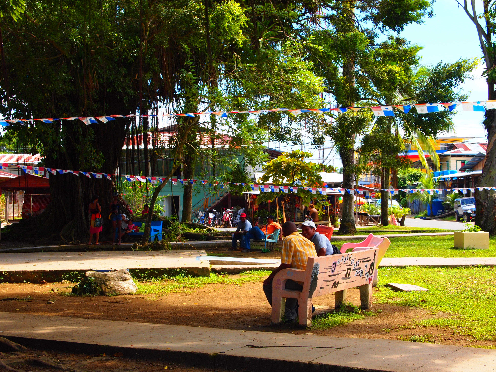
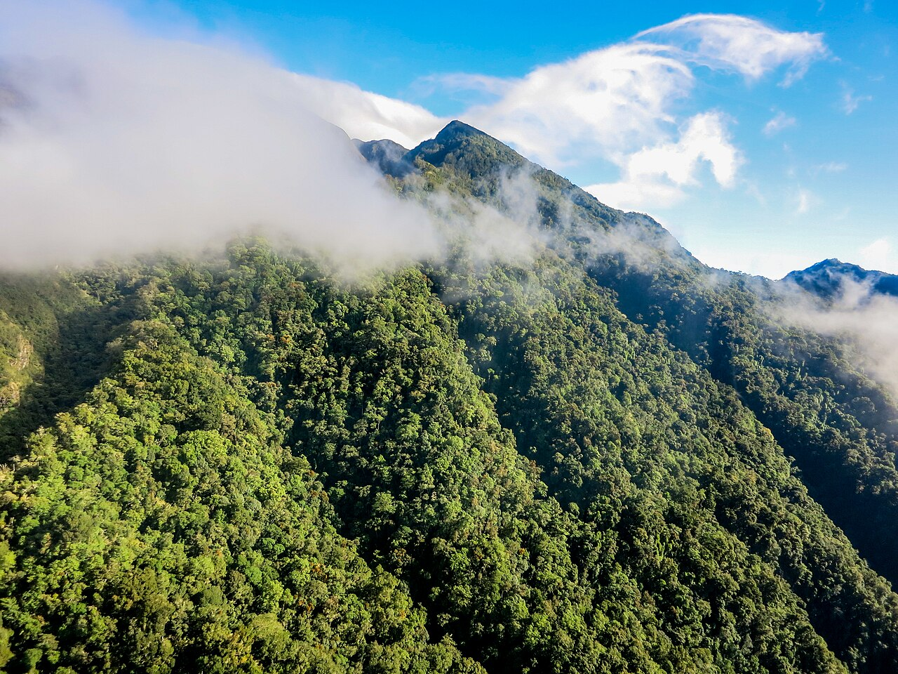
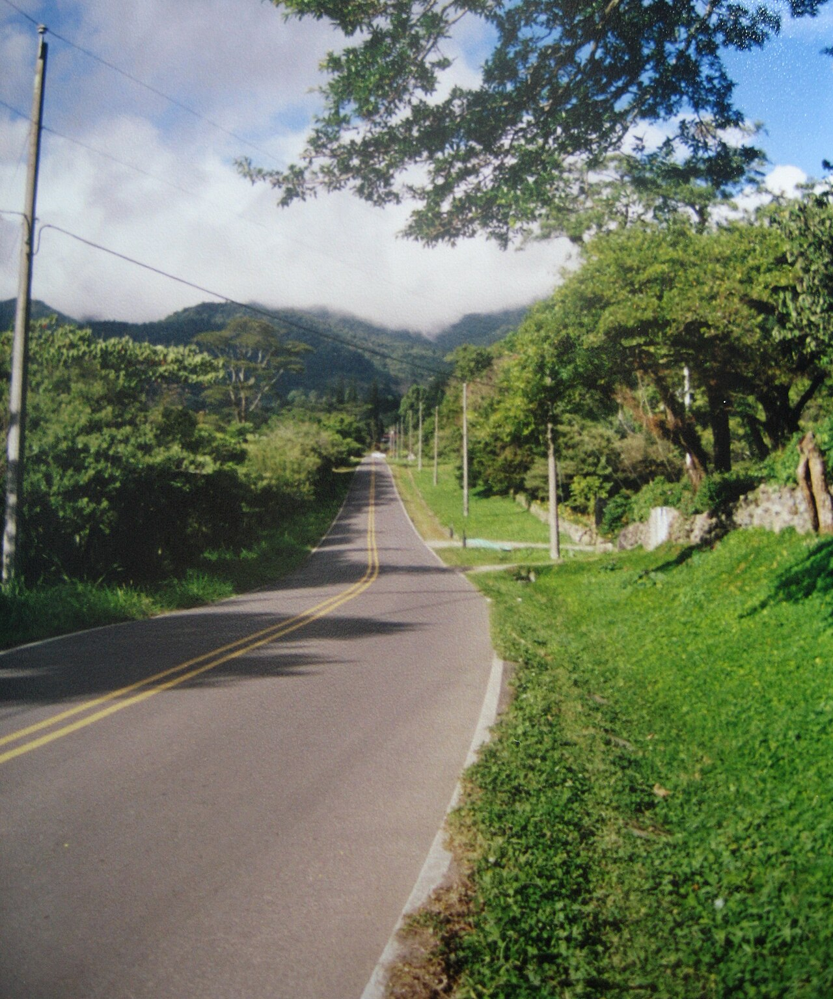
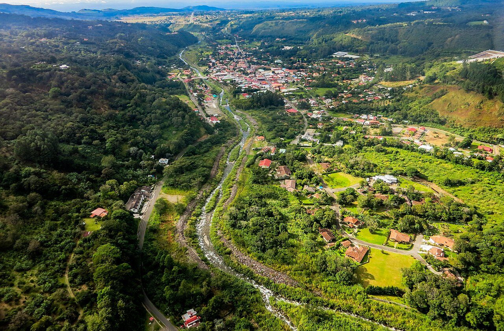
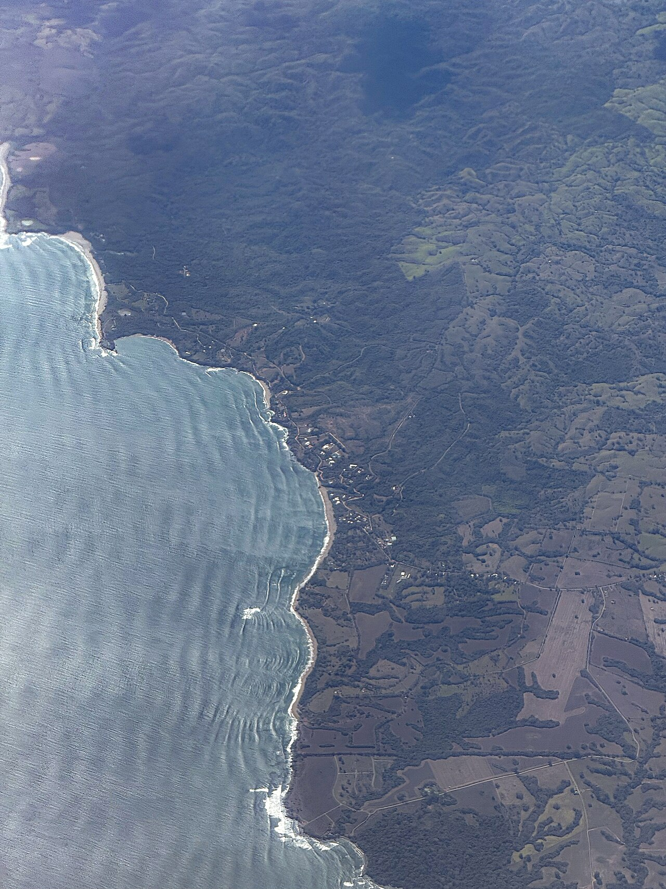

El Blog
The Blog
Notas de campo de personas que construyen y compran casas en Panamá. Cifras reales, compensaciones honestas y las preguntas que vale hacerse antes de mover dinero.
Field notes from people building and buying homes in Panama. Real numbers, honest trade-offs, and the questions worth asking before you send any money.

Las experiencias que vale la pena tener antes de irte
Experiences worth having before you leave
Casco Viejo, las esclusas del Canal, las islas de San Blas, comunidades Emberá y las excursiones a las que la gente regresa — más los operadores locales que las hacen posibles.
Casco Viejo, the Canal locks, San Blas Islands, Emberá villages, and the day trips people come back for — plus the local operators who run them.

Por qué Latinoamérica, y por qué Panamá específicamente
Why Latin America, and why Panama specifically
El argumento para mudarse, comprar o construir al sur, con los defectos incluidos: ahorros en dólares, rutas de residencia que puedes leer, el clima según la altitud y el riesgo del terreno sin título que nadie pone en el folleto.
The case for moving, buying, or building south, with the caveats left in: dollar savings, residency routes you can actually read, picking your climate by elevation, and the titled-land risk nobody puts in the brochure.

La Visa de Naciones Amigas y la ruta de bienes raíces de $200,000
The Friendly Nations Visa and the $200,000 real estate route
Cómo una compra de propiedad se convierte en residencia panameña, qué significa realmente el requisito de los $200,000 y por qué el título lo es todo.
How a property purchase turns into Panama residency, what the $200,000 requirement really means, and why titled land is the whole game.

Vivir en Costa Rica siendo estadounidense
Living in Costa Rica as an American
El primer año sin folleto: la moneda que se come el presupuesto, la Caja que no es opcional, y qué cuesta más que en casa.
The first year without the brochure: the currency that eats your budget, the Caja that isn't optional, and what costs more than at home.

Lo que Costa Rica te pide a cambio
What Costa Rica asks of you
Todo lugar pide algo. Las contrapartidas reales, escritas por alguien que cree que valen la pena.
Every place asks something. The real trade-offs, written by someone who thinks they're worth it.

La vida expat en Panamá
Expat life in Panama
No hay una comunidad extranjera en Panamá, hay cuatro, y son vidas completamente distintas.
There isn't one expat community in Panama, there are four, and they're completely different lives.

Lo que Panamá te pide a cambio
What Panama asks of you
Cinco contrapartidas reales, incluida una que tiene fecha límite y depende de tu edad, no de tu presupuesto.
Five real trade-offs, including one with a deadline attached to your age rather than your budget.

Cuánto cuesta vivir en Panamá
What it costs to live in Panama
No un promedio. Cuatro presupuestos reales, para cuatro tipos de hogar, en cuatro pueblos distintos.
Not an average. Four real budgets, for four kinds of household, in four different towns.

Alquilar en Boquete antes de comprar
Renting in Boquete before you buy
Doce meses de alquiler es el seguro más barato que existe sobre una compra aquí. Qué cuesta y cómo se encuentran.
Twelve months of rent is the cheapest insurance on a purchase here. What it costs and how to find them.
Costa Rica frente a Estados Unidos
Costa Rica vs the USA, line by line
Dónde Costa Rica gana de verdad, dónde pierde sin discusión, y por qué la diferencia neta es más estrecha de lo que promete el folleto.
Where Costa Rica genuinely wins, where it loses outright, and why the net gap is narrower than advertised.

Bienes raíces en Bocas del Toro
Bocas del Toro real estate
Qué cuesta el archipiélago en 2026, por qué el acceso al agua manda sobre los metros, y por qué el derecho posesorio aquí es peor que en las tierras altas.
What the archipelago costs in 2026, why water access beats square metres, and why rights of possession is a harder problem here than in the highlands.

Cómo llegar a Bocas del Toro
Getting to Bocas del Toro
Vuelos, buses y taxis acuáticos con tarifas reales. Y el error que casi todo el mundo comete: los vuelos salen de Albrook, no de Tocumen.
Flights, buses and water taxis with real fares. And the mistake almost everyone makes: flights leave from Albrook, not Tocumen.

Qué hacer en Bocas del Toro
Things to do in Bocas del Toro
Precios reales, cuál playa saltarte, y qué le hace la temporada de lluvia a todo lo demás. Escrito desde el lado del que se queda.
Real prices, which beach to skip, and what the wet season does to everything else. Written from the staying side.

Bienes raíces en Volcán
Volcán real estate
El lado más tranquilo, más alto y más barato de las tierras altas: por qué cuesta menos que Boquete, a quién le conviene y la trampa de terrenos sin título que aquí es mayor que en casi cualquier otro lugar.
The quieter, higher, cheaper side of the highlands: why it costs less than Boquete, who it suits, and the rights-of-possession land trap that's bigger here than almost anywhere.

Costo de construir una casa en Panamá
Cost to build a house in Panama
Lo que cuesta una casa llave en mano por región, en dólares por metro cuadrado, más los costos blandos y ocultos que sorprenden a los compradores por primera vez.
What a turnkey home runs by region, in plain dollars per square foot, plus the soft costs and hidden costs that catch first-time buyers off guard.

Boquete vs Pedasí
Boquete vs Pedasí
¿Tierras altas o costa? Clima, diferencia en costo de construcción, distancia a hospitales y una lectura honesta sobre a quién le conviene cada pueblo.
Highlands or coast? Climate, the difference in build cost, healthcare drive times, and an honest read on who each town actually suits.

Constructor de casas personalizadas en Panamá
Custom home builder in Panama
Qué implica una construcción llave en mano a precio fijo aquí: niveles de acabados, cronograma, hitos de pago en fideicomiso y qué tiene que significar "precio fijo" para ser real.
What a turnkey, fixed price custom build involves here: finish tiers, the timeline, escrow milestones, and what "fixed price" has to mean to be real.

Construir una casa en Pedasí
Building a home in Pedasí
La costa de Azuero en detalle: cómo encontrar tierra con título, construir cerca del mar salado, permisos y lo que la costa agrega al presupuesto y al cronograma.
The Azuero coast in detail: finding titled land, building near salt air, permits, and what the coast adds to the budget and the timeline.